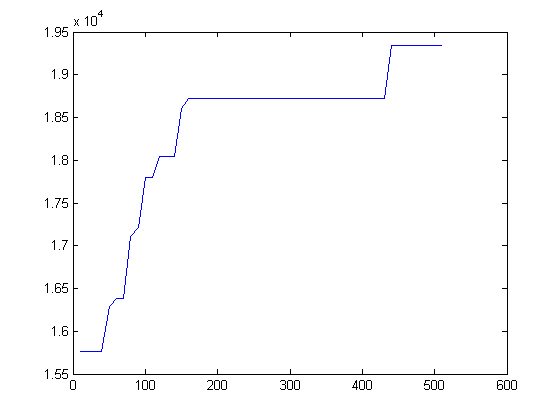
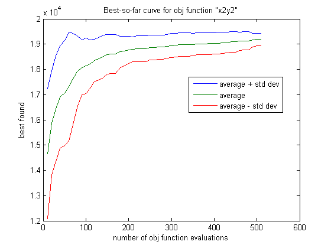

Tutorial del vgGA
El vgGA está programado orientado a objetos. El vgGA está basado en la clase population definida en el directorio @population/. En MATLAB todos los métodos de una clase deben colocarse en un directorio que empiece con el caracter @ (arroba) y que tenga el mismo nombre de la clase.
El constructor de la clase debe ser una función con el mismo nombre de la clase, y que regrese una instancia de la clase que se contruya con la función class. La forma en que se despliega una instancia de una clase queda determinada por el método display que el usuario debe definir.
MATLAB no permite accesar los campos de un objeto fuera de los métodos de ese objeto. Es usual contruir métodos específicos para obtener y modificar campos de una clase. La clase population tiene los métodos get y set para este fin; sin embargo, están % limitados a los campos que se requirieron para pruebas, y no son muy generales.
En MATLAB, a menos que se declaren globales, todas las variables son locales a las funciones que las utilizan. Los métodos de una clase son simplemente funciones que deben recibir la instancia de la clase sobre la que van a trabajar, y deben regresarla para su asignación si es que deben modificar la instancia.
Contents
Creación de una población vacía
Para crear un objeto p de la clase population se utiliza el constructor de la clase. Por ejemplo, para crear una población de enteros, con dos segmentos (uno de 6 dígitos binarios, otro de 3 dígitos base 5), con probabilidades de mutación de 0.4 y 0.2, y probablidad de cruce 0.9, se utiliza la siguiente instrucción:
p = population('integer',[6 3],[0.4 0.2],0.9,[2 5])
p =
vgGA population:
parameters:
type: integer
pm: 0.4 0.2
pc: 0.9
m: 2
B: 2 5
delta: 2 5
dist: exponential
digits: traditional
N: 6 3
Best (max) found at evaluation 0, after 0 evaluations:
BEST: 000000 000 0 0 -> -Inf
Individuos aleatorios
Para crear 10 individuos aleatorios se utiliza el método random como se muestra a continuación.
Para cada individuo se lista su genotipo, fenotipo, y evaluación. Los individuos tiene evaluaciones de NaN (Not a Number) porque todavía no han sido evaluados.
p = random(p,10)
p =
vgGA population:
parameters:
type: integer
pm: 0.4 0.2
pc: 0.9
m: 2
B: 2 5
delta: 2 5
dist: exponential
digits: traditional
N: 6 3
individual:
1: 000000 010 0 5 -> NaN
2: 010100 434 20 119 -> NaN
3: 100101 440 37 120 -> NaN
4: 110010 122 50 37 -> NaN
5: 101100 303 44 78 -> NaN
6: 110001 313 49 83 -> NaN
7: 010011 234 19 69 -> NaN
8: 101101 222 45 62 -> NaN
9: 100011 034 35 19 -> NaN
10: 001101 214 13 59 -> NaN
Average fitness: NaN, std dev: NaN
Best (max) found at evaluation 0, after 0 evaluations:
BEST: 000000 000 0 0 -> -Inf
Evaluación
La población se evalúa con el método evaluate que recibe la función objetivo como parámetro.
El método display despliega información general de la población: aptitud promedio, desviación estándar de la aptitud de la apitud. También se despliega cuántas evaluaciones se han realizado, en cuál evaluación se encontró el mejor encontrado, y el mejor encontrado. En este ejemplo la población se evalúa con la función x2y2 que es una función que recide en el directorio raíz vgGA/, y que regresa la suma de los cuadrados de los segmentos. El método evaluate espera una función que reciba un vector que corresponde al fenotipo (campo r) de cada individuo, y regresa su evaluación.
p = evaluate(p,@x2y2)
p =
vgGA population:
parameters:
type: integer
pm: 0.4 0.2
pc: 0.9
m: 2
B: 2 5
delta: 2 5
dist: exponential
digits: traditional
N: 6 3
individual:
1: 000000 010 0 5 -> 25.0000
2: 010100 434 20 119 -> 14561.0000
3: 100101 440 37 120 -> 15769.0000
4: 110010 122 50 37 -> 3869.0000
5: 101100 303 44 78 -> 8020.0000
6: 110001 313 49 83 -> 9290.0000
7: 010011 234 19 69 -> 5122.0000
8: 101101 222 45 62 -> 5869.0000
9: 100011 034 35 19 -> 1586.0000
10: 001101 214 13 59 -> 3650.0000
Average fitness: 6776.1000, std dev: 5203.0012
Best (max) found at evaluation 3, after 10 evaluations:
BEST: 100101 440 37 120 -> 15769.0000
Selección
Para realizar selección de rueda de ruleta sobre la población se aplica el método roulette (hay otros métodos de selección implementados en el vgGA).
Los métodos sus y tournament implementan seleccíón universal estocástica y selección de torneo, respectivamente.
Nótese que la mayoría de los individuos tienen una evaluación de NaN porque no han sido evaluados.
p = roulette(p)
p =
vgGA population:
parameters:
type: integer
pm: 0.4 0.2
pc: 0.9
m: 2
B: 2 5
delta: 2 5
dist: exponential
digits: traditional
N: 6 3
individual:
1: 101101 222 45 62 -> 5869.0000 0.8661
2: 010100 434 20 119 -> 14561.0000 2.1489
3: 110010 122 50 37 -> 3869.0000 0.5710
4: 010100 434 20 119 -> 14561.0000 2.1489
5: 001101 214 13 59 -> 3650.0000 0.5387
6: 100101 440 37 120 -> 15769.0000 2.3271
7: 100101 440 37 120 -> 15769.0000 2.3271
8: 010011 234 19 69 -> 5122.0000 0.7559
9: 101100 303 44 78 -> 8020.0000 1.1836
10: 100011 034 35 19 -> 1586.0000 0.2341
Average fitness: 8877.6000, std dev: 5667.2338
Best (max) found at evaluation 3, after 10 evaluations:
BEST: 100101 440 37 120 -> 15769.0000
Cruce y mutación
Cruce y mutación se realizan con los métodos crossover y mutation:
p = crossover(p) p = mutation(p)
p =
vgGA population:
parameters:
type: integer
pm: 0.4 0.2
pc: 0.9
m: 2
B: 2 5
delta: 2 5
dist: exponential
digits: traditional
N: 6 3
individual:
1: 100011 022 35 12 -> NaN NaN
2: 101100 434 44 119 -> NaN NaN
3: 010100 422 20 112 -> NaN NaN
4: 110010 134 50 44 -> NaN NaN
5: 101101 214 45 59 -> NaN NaN
6: 000101 440 5 120 -> NaN NaN
7: 010101 440 21 120 -> NaN NaN
8: 100011 234 35 69 -> NaN NaN
9: 010100 303 20 78 -> NaN NaN
10: 101101 234 45 69 -> NaN NaN
Average fitness: NaN, std dev: NaN
Best (max) found at evaluation 3, after 10 evaluations:
BEST: 100101 440 37 120 -> 15769.0000
p =
vgGA population:
parameters:
type: integer
pm: 0.4 0.2
pc: 0.9
m: 2
B: 2 5
delta: 2 5
dist: exponential
digits: traditional
N: 6 3
individual:
1: 110011 022 51 12 -> NaN NaN
2: 001100 400 12 100 -> NaN NaN
3: 111110 422 62 112 -> NaN NaN
4: 110010 113 50 33 -> NaN NaN
5: 101001 214 41 59 -> NaN NaN
6: 000001 440 1 120 -> NaN NaN
7: 000101 440 5 120 -> NaN NaN
8: 110001 234 49 69 -> NaN NaN
9: 011100 303 28 78 -> NaN NaN
10: 101100 234 44 69 -> NaN NaN
Average fitness: NaN, std dev: NaN
Best (max) found at evaluation 3, after 10 evaluations:
BEST: 100101 440 37 120 -> 15769.0000
Algoritmo genético
Con los métodos population, random, evaluate, roulette, crossover, y mutation es posible crear un algoritmo genético que corra por un número de generaciones y que regrese el individuo mejor encontrado contra el número de evaluaciones de la generación. El método runGA hace lo anterior. En las siguientes instrucciones se corre la población p por 50 generaciones y se grafica el mejor encontrado contra el número de evalauciones de la función objetivo:
[p,B] = runGA(p,@x2y2,50); plot(B(:,1),B(:,2))
10 3 37 120 -> 15769.0000 20 3 37 120 -> 15769.0000 30 3 37 120 -> 15769.0000 40 3 37 120 -> 15769.0000 50 43 63 111 -> 16290.0000 60 51 62 112 -> 16388.0000 70 51 62 112 -> 16388.0000 80 74 52 120 -> 17104.0000 90 88 53 120 -> 17209.0000 100 91 54 122 -> 17800.0000 110 91 54 122 -> 17800.0000 120 120 54 123 -> 18045.0000 130 120 54 123 -> 18045.0000 140 120 54 123 -> 18045.0000 150 148 61 122 -> 18605.0000 160 151 62 122 -> 18728.0000 170 151 62 122 -> 18728.0000 180 151 62 122 -> 18728.0000 190 151 62 122 -> 18728.0000 200 151 62 122 -> 18728.0000 210 151 62 122 -> 18728.0000 220 151 62 122 -> 18728.0000 230 151 62 122 -> 18728.0000 240 151 62 122 -> 18728.0000 250 151 62 122 -> 18728.0000 260 151 62 122 -> 18728.0000 270 151 62 122 -> 18728.0000 280 151 62 122 -> 18728.0000 290 151 62 122 -> 18728.0000 300 151 62 122 -> 18728.0000 310 151 62 122 -> 18728.0000 320 151 62 122 -> 18728.0000 330 151 62 122 -> 18728.0000 340 151 62 122 -> 18728.0000 350 151 62 122 -> 18728.0000 360 151 62 122 -> 18728.0000 370 151 62 122 -> 18728.0000 380 151 62 122 -> 18728.0000 390 151 62 122 -> 18728.0000 400 151 62 122 -> 18728.0000 410 151 62 122 -> 18728.0000 420 151 62 122 -> 18728.0000 430 151 62 122 -> 18728.0000 440 440 63 124 -> 19345.0000 450 440 63 124 -> 19345.0000 460 440 63 124 -> 19345.0000 470 440 63 124 -> 19345.0000 480 440 63 124 -> 19345.0000 490 440 63 124 -> 19345.0000 500 440 63 124 -> 19345.0000 510 440 63 124 -> 19345.0000
Curva del mejor encontrado
Para obtener la curva del mejor encontrado existe la función plotGA en el directorio raíz vgGA. Esta función crea una población y llama repetidamente a runGA para luego graficar el promedio, más y menos la desviación estándar, del mejor encontrado de una serie de corridas de un algoritmo genético. Con la siguiente instrucción se corre el algoritmo genético de este tutorial 20 veces por 50 generaciones.
plotGA(20,50,10,@x2y2,'random',... 'integer',[6 3],[0.4 0.2],0.9,[2 5]);
*** Starting run #1 *** 10 4 56 104 -> 13952.0000 20 4 56 104 -> 13952.0000 30 4 56 104 -> 13952.0000 40 4 56 104 -> 13952.0000 50 4 56 104 -> 13952.0000 60 4 56 104 -> 13952.0000 70 4 56 104 -> 13952.0000 80 71 48 112 -> 14848.0000 90 71 48 112 -> 14848.0000 100 94 49 112 -> 14945.0000 110 101 62 110 -> 15944.0000 120 101 62 110 -> 15944.0000 130 101 62 110 -> 15944.0000 140 101 62 110 -> 15944.0000 150 143 43 121 -> 16490.0000 160 143 43 121 -> 16490.0000 170 143 43 121 -> 16490.0000 180 171 54 121 -> 17557.0000 190 183 54 123 -> 18045.0000 200 183 54 123 -> 18045.0000 210 209 57 123 -> 18378.0000 220 209 57 123 -> 18378.0000 230 209 57 123 -> 18378.0000 240 209 57 123 -> 18378.0000 250 247 60 124 -> 18976.0000 260 247 60 124 -> 18976.0000 270 247 60 124 -> 18976.0000 280 247 60 124 -> 18976.0000 290 247 60 124 -> 18976.0000 300 247 60 124 -> 18976.0000 310 247 60 124 -> 18976.0000 320 247 60 124 -> 18976.0000 330 247 60 124 -> 18976.0000 340 247 60 124 -> 18976.0000 350 247 60 124 -> 18976.0000 360 247 60 124 -> 18976.0000 370 247 60 124 -> 18976.0000 380 247 60 124 -> 18976.0000 390 247 60 124 -> 18976.0000 400 392 63 123 -> 19098.0000 410 392 63 123 -> 19098.0000 420 392 63 123 -> 19098.0000 430 392 63 123 -> 19098.0000 440 392 63 123 -> 19098.0000 450 392 63 123 -> 19098.0000 460 392 63 123 -> 19098.0000 470 392 63 123 -> 19098.0000 480 392 63 123 -> 19098.0000 490 392 63 123 -> 19098.0000 500 392 63 123 -> 19098.0000 510 392 63 123 -> 19098.0000 *** Starting run #2 *** 10 1 8 118 -> 13988.0000 20 16 50 117 -> 16189.0000 30 28 48 118 -> 16228.0000 40 28 48 118 -> 16228.0000 50 42 57 118 -> 17173.0000 60 42 57 118 -> 17173.0000 70 64 52 123 -> 17833.0000 80 64 52 123 -> 17833.0000 90 64 52 123 -> 17833.0000 100 64 52 123 -> 17833.0000 110 64 52 123 -> 17833.0000 120 64 52 123 -> 17833.0000 130 64 52 123 -> 17833.0000 140 64 52 123 -> 17833.0000 150 64 52 123 -> 17833.0000 160 64 52 123 -> 17833.0000 170 64 52 123 -> 17833.0000 180 64 52 123 -> 17833.0000 190 64 52 123 -> 17833.0000 200 198 55 122 -> 17909.0000 210 209 53 124 -> 18185.0000 220 209 53 124 -> 18185.0000 230 209 53 124 -> 18185.0000 240 209 53 124 -> 18185.0000 250 249 57 123 -> 18378.0000 260 249 57 123 -> 18378.0000 270 249 57 123 -> 18378.0000 280 249 57 123 -> 18378.0000 290 249 57 123 -> 18378.0000 300 249 57 123 -> 18378.0000 310 249 57 123 -> 18378.0000 320 249 57 123 -> 18378.0000 330 249 57 123 -> 18378.0000 340 249 57 123 -> 18378.0000 350 349 63 121 -> 18610.0000 360 352 63 123 -> 19098.0000 370 352 63 123 -> 19098.0000 380 352 63 123 -> 19098.0000 390 352 63 123 -> 19098.0000 400 352 63 123 -> 19098.0000 410 352 63 123 -> 19098.0000 420 352 63 123 -> 19098.0000 430 352 63 123 -> 19098.0000 440 352 63 123 -> 19098.0000 450 352 63 123 -> 19098.0000 460 352 63 123 -> 19098.0000 470 352 63 123 -> 19098.0000 480 352 63 123 -> 19098.0000 490 352 63 123 -> 19098.0000 500 352 63 123 -> 19098.0000 510 352 63 123 -> 19098.0000 *** Starting run #3 *** 10 2 59 120 -> 17881.0000 20 2 59 120 -> 17881.0000 30 2 59 120 -> 17881.0000 40 2 59 120 -> 17881.0000 50 2 59 120 -> 17881.0000 60 2 59 120 -> 17881.0000 70 2 59 120 -> 17881.0000 80 2 59 120 -> 17881.0000 90 2 59 120 -> 17881.0000 100 2 59 120 -> 17881.0000 110 2 59 120 -> 17881.0000 120 2 59 120 -> 17881.0000 130 2 59 120 -> 17881.0000 140 2 59 120 -> 17881.0000 150 2 59 120 -> 17881.0000 160 2 59 120 -> 17881.0000 170 2 59 120 -> 17881.0000 180 2 59 120 -> 17881.0000 190 2 59 120 -> 17881.0000 200 2 59 120 -> 17881.0000 210 2 59 120 -> 17881.0000 220 2 59 120 -> 17881.0000 230 2 59 120 -> 17881.0000 240 2 59 120 -> 17881.0000 250 2 59 120 -> 17881.0000 260 2 59 120 -> 17881.0000 270 2 59 120 -> 17881.0000 280 2 59 120 -> 17881.0000 290 2 59 120 -> 17881.0000 300 2 59 120 -> 17881.0000 310 2 59 120 -> 17881.0000 320 2 59 120 -> 17881.0000 330 2 59 120 -> 17881.0000 340 2 59 120 -> 17881.0000 350 2 59 120 -> 17881.0000 360 2 59 120 -> 17881.0000 370 2 59 120 -> 17881.0000 380 2 59 120 -> 17881.0000 390 2 59 120 -> 17881.0000 400 2 59 120 -> 17881.0000 410 2 59 120 -> 17881.0000 420 2 59 120 -> 17881.0000 430 2 59 120 -> 17881.0000 440 2 59 120 -> 17881.0000 450 2 59 120 -> 17881.0000 460 2 59 120 -> 17881.0000 470 2 59 120 -> 17881.0000 480 2 59 120 -> 17881.0000 490 482 60 122 -> 18484.0000 500 482 60 122 -> 18484.0000 510 482 60 122 -> 18484.0000 *** Starting run #4 *** 10 1 46 123 -> 17245.0000 20 1 46 123 -> 17245.0000 30 22 48 123 -> 17433.0000 40 22 48 123 -> 17433.0000 50 22 48 123 -> 17433.0000 60 53 60 124 -> 18976.0000 70 66 63 124 -> 19345.0000 80 66 63 124 -> 19345.0000 90 66 63 124 -> 19345.0000 100 66 63 124 -> 19345.0000 110 66 63 124 -> 19345.0000 120 66 63 124 -> 19345.0000 130 66 63 124 -> 19345.0000 140 66 63 124 -> 19345.0000 150 66 63 124 -> 19345.0000 160 66 63 124 -> 19345.0000 170 66 63 124 -> 19345.0000 180 66 63 124 -> 19345.0000 190 66 63 124 -> 19345.0000 200 66 63 124 -> 19345.0000 210 66 63 124 -> 19345.0000 220 66 63 124 -> 19345.0000 230 66 63 124 -> 19345.0000 240 66 63 124 -> 19345.0000 250 66 63 124 -> 19345.0000 260 66 63 124 -> 19345.0000 270 66 63 124 -> 19345.0000 280 66 63 124 -> 19345.0000 290 66 63 124 -> 19345.0000 300 66 63 124 -> 19345.0000 310 66 63 124 -> 19345.0000 320 66 63 124 -> 19345.0000 330 66 63 124 -> 19345.0000 340 66 63 124 -> 19345.0000 350 66 63 124 -> 19345.0000 360 66 63 124 -> 19345.0000 370 66 63 124 -> 19345.0000 380 66 63 124 -> 19345.0000 390 66 63 124 -> 19345.0000 400 66 63 124 -> 19345.0000 410 66 63 124 -> 19345.0000 420 66 63 124 -> 19345.0000 430 66 63 124 -> 19345.0000 440 66 63 124 -> 19345.0000 450 66 63 124 -> 19345.0000 460 66 63 124 -> 19345.0000 470 66 63 124 -> 19345.0000 480 66 63 124 -> 19345.0000 490 66 63 124 -> 19345.0000 500 66 63 124 -> 19345.0000 510 66 63 124 -> 19345.0000 *** Starting run #5 *** 10 6 42 117 -> 15453.0000 20 18 58 117 -> 17053.0000 30 18 58 117 -> 17053.0000 40 18 58 117 -> 17053.0000 50 42 60 124 -> 18976.0000 60 42 60 124 -> 18976.0000 70 42 60 124 -> 18976.0000 80 77 62 124 -> 19220.0000 90 77 62 124 -> 19220.0000 100 77 62 124 -> 19220.0000 110 77 62 124 -> 19220.0000 120 113 63 124 -> 19345.0000 130 113 63 124 -> 19345.0000 140 113 63 124 -> 19345.0000 150 113 63 124 -> 19345.0000 160 113 63 124 -> 19345.0000 170 113 63 124 -> 19345.0000 180 113 63 124 -> 19345.0000 190 113 63 124 -> 19345.0000 200 113 63 124 -> 19345.0000 210 113 63 124 -> 19345.0000 220 113 63 124 -> 19345.0000 230 113 63 124 -> 19345.0000 240 113 63 124 -> 19345.0000 250 113 63 124 -> 19345.0000 260 113 63 124 -> 19345.0000 270 113 63 124 -> 19345.0000 280 113 63 124 -> 19345.0000 290 113 63 124 -> 19345.0000 300 113 63 124 -> 19345.0000 310 113 63 124 -> 19345.0000 320 113 63 124 -> 19345.0000 330 113 63 124 -> 19345.0000 340 113 63 124 -> 19345.0000 350 113 63 124 -> 19345.0000 360 113 63 124 -> 19345.0000 370 113 63 124 -> 19345.0000 380 113 63 124 -> 19345.0000 390 113 63 124 -> 19345.0000 400 113 63 124 -> 19345.0000 410 113 63 124 -> 19345.0000 420 113 63 124 -> 19345.0000 430 113 63 124 -> 19345.0000 440 113 63 124 -> 19345.0000 450 113 63 124 -> 19345.0000 460 113 63 124 -> 19345.0000 470 113 63 124 -> 19345.0000 480 113 63 124 -> 19345.0000 490 113 63 124 -> 19345.0000 500 113 63 124 -> 19345.0000 510 113 63 124 -> 19345.0000 *** Starting run #6 *** 10 3 51 101 -> 12802.0000 20 19 51 102 -> 13005.0000 30 19 51 102 -> 13005.0000 40 40 59 119 -> 17642.0000 50 40 59 119 -> 17642.0000 60 51 60 122 -> 18484.0000 70 51 60 122 -> 18484.0000 80 51 60 122 -> 18484.0000 90 51 60 122 -> 18484.0000 100 51 60 122 -> 18484.0000 110 51 60 122 -> 18484.0000 120 51 60 122 -> 18484.0000 130 51 60 122 -> 18484.0000 140 51 60 122 -> 18484.0000 150 143 62 124 -> 19220.0000 160 154 63 124 -> 19345.0000 170 154 63 124 -> 19345.0000 180 154 63 124 -> 19345.0000 190 154 63 124 -> 19345.0000 200 154 63 124 -> 19345.0000 210 154 63 124 -> 19345.0000 220 154 63 124 -> 19345.0000 230 154 63 124 -> 19345.0000 240 154 63 124 -> 19345.0000 250 154 63 124 -> 19345.0000 260 154 63 124 -> 19345.0000 270 154 63 124 -> 19345.0000 280 154 63 124 -> 19345.0000 290 154 63 124 -> 19345.0000 300 154 63 124 -> 19345.0000 310 154 63 124 -> 19345.0000 320 154 63 124 -> 19345.0000 330 154 63 124 -> 19345.0000 340 154 63 124 -> 19345.0000 350 154 63 124 -> 19345.0000 360 154 63 124 -> 19345.0000 370 154 63 124 -> 19345.0000 380 154 63 124 -> 19345.0000 390 154 63 124 -> 19345.0000 400 154 63 124 -> 19345.0000 410 154 63 124 -> 19345.0000 420 154 63 124 -> 19345.0000 430 154 63 124 -> 19345.0000 440 154 63 124 -> 19345.0000 450 154 63 124 -> 19345.0000 460 154 63 124 -> 19345.0000 470 154 63 124 -> 19345.0000 480 154 63 124 -> 19345.0000 490 154 63 124 -> 19345.0000 500 154 63 124 -> 19345.0000 510 154 63 124 -> 19345.0000 *** Starting run #7 *** 10 10 16 121 -> 14897.0000 20 20 48 121 -> 16945.0000 30 28 49 121 -> 17042.0000 40 28 49 121 -> 17042.0000 50 47 50 121 -> 17141.0000 60 57 54 121 -> 17557.0000 70 65 63 120 -> 18369.0000 80 65 63 120 -> 18369.0000 90 65 63 120 -> 18369.0000 100 96 63 124 -> 19345.0000 110 96 63 124 -> 19345.0000 120 96 63 124 -> 19345.0000 130 96 63 124 -> 19345.0000 140 96 63 124 -> 19345.0000 150 96 63 124 -> 19345.0000 160 96 63 124 -> 19345.0000 170 96 63 124 -> 19345.0000 180 96 63 124 -> 19345.0000 190 96 63 124 -> 19345.0000 200 96 63 124 -> 19345.0000 210 96 63 124 -> 19345.0000 220 96 63 124 -> 19345.0000 230 96 63 124 -> 19345.0000 240 96 63 124 -> 19345.0000 250 96 63 124 -> 19345.0000 260 96 63 124 -> 19345.0000 270 96 63 124 -> 19345.0000 280 96 63 124 -> 19345.0000 290 96 63 124 -> 19345.0000 300 96 63 124 -> 19345.0000 310 96 63 124 -> 19345.0000 320 96 63 124 -> 19345.0000 330 96 63 124 -> 19345.0000 340 96 63 124 -> 19345.0000 350 96 63 124 -> 19345.0000 360 96 63 124 -> 19345.0000 370 96 63 124 -> 19345.0000 380 96 63 124 -> 19345.0000 390 96 63 124 -> 19345.0000 400 96 63 124 -> 19345.0000 410 96 63 124 -> 19345.0000 420 96 63 124 -> 19345.0000 430 96 63 124 -> 19345.0000 440 96 63 124 -> 19345.0000 450 96 63 124 -> 19345.0000 460 96 63 124 -> 19345.0000 470 96 63 124 -> 19345.0000 480 96 63 124 -> 19345.0000 490 96 63 124 -> 19345.0000 500 96 63 124 -> 19345.0000 510 96 63 124 -> 19345.0000 *** Starting run #8 *** 10 10 63 114 -> 16965.0000 20 10 63 114 -> 16965.0000 30 10 63 114 -> 16965.0000 40 38 61 124 -> 19097.0000 50 38 61 124 -> 19097.0000 60 38 61 124 -> 19097.0000 70 38 61 124 -> 19097.0000 80 38 61 124 -> 19097.0000 90 38 61 124 -> 19097.0000 100 38 61 124 -> 19097.0000 110 38 61 124 -> 19097.0000 120 38 61 124 -> 19097.0000 130 38 61 124 -> 19097.0000 140 38 61 124 -> 19097.0000 150 38 61 124 -> 19097.0000 160 38 61 124 -> 19097.0000 170 38 61 124 -> 19097.0000 180 38 61 124 -> 19097.0000 190 38 61 124 -> 19097.0000 200 38 61 124 -> 19097.0000 210 38 61 124 -> 19097.0000 220 38 61 124 -> 19097.0000 230 38 61 124 -> 19097.0000 240 38 61 124 -> 19097.0000 250 38 61 124 -> 19097.0000 260 38 61 124 -> 19097.0000 270 38 61 124 -> 19097.0000 280 38 61 124 -> 19097.0000 290 286 63 124 -> 19345.0000 300 286 63 124 -> 19345.0000 310 286 63 124 -> 19345.0000 320 286 63 124 -> 19345.0000 330 286 63 124 -> 19345.0000 340 286 63 124 -> 19345.0000 350 286 63 124 -> 19345.0000 360 286 63 124 -> 19345.0000 370 286 63 124 -> 19345.0000 380 286 63 124 -> 19345.0000 390 286 63 124 -> 19345.0000 400 286 63 124 -> 19345.0000 410 286 63 124 -> 19345.0000 420 286 63 124 -> 19345.0000 430 286 63 124 -> 19345.0000 440 286 63 124 -> 19345.0000 450 286 63 124 -> 19345.0000 460 286 63 124 -> 19345.0000 470 286 63 124 -> 19345.0000 480 286 63 124 -> 19345.0000 490 286 63 124 -> 19345.0000 500 286 63 124 -> 19345.0000 510 286 63 124 -> 19345.0000 *** Starting run #9 *** 10 2 57 124 -> 18625.0000 20 14 62 123 -> 18973.0000 30 14 62 123 -> 18973.0000 40 14 62 123 -> 18973.0000 50 14 62 123 -> 18973.0000 60 14 62 123 -> 18973.0000 70 14 62 123 -> 18973.0000 80 14 62 123 -> 18973.0000 90 14 62 123 -> 18973.0000 100 14 62 123 -> 18973.0000 110 14 62 123 -> 18973.0000 120 14 62 123 -> 18973.0000 130 14 62 123 -> 18973.0000 140 14 62 123 -> 18973.0000 150 14 62 123 -> 18973.0000 160 14 62 123 -> 18973.0000 170 14 62 123 -> 18973.0000 180 14 62 123 -> 18973.0000 190 14 62 123 -> 18973.0000 200 14 62 123 -> 18973.0000 210 14 62 123 -> 18973.0000 220 14 62 123 -> 18973.0000 230 14 62 123 -> 18973.0000 240 14 62 123 -> 18973.0000 250 246 63 123 -> 19098.0000 260 246 63 123 -> 19098.0000 270 246 63 123 -> 19098.0000 280 246 63 123 -> 19098.0000 290 246 63 123 -> 19098.0000 300 246 63 123 -> 19098.0000 310 246 63 123 -> 19098.0000 320 246 63 123 -> 19098.0000 330 246 63 123 -> 19098.0000 340 246 63 123 -> 19098.0000 350 246 63 123 -> 19098.0000 360 246 63 123 -> 19098.0000 370 246 63 123 -> 19098.0000 380 246 63 123 -> 19098.0000 390 246 63 123 -> 19098.0000 400 246 63 123 -> 19098.0000 410 246 63 123 -> 19098.0000 420 246 63 123 -> 19098.0000 430 246 63 123 -> 19098.0000 440 246 63 123 -> 19098.0000 450 246 63 123 -> 19098.0000 460 246 63 123 -> 19098.0000 470 246 63 123 -> 19098.0000 480 246 63 123 -> 19098.0000 490 246 63 123 -> 19098.0000 500 246 63 123 -> 19098.0000 510 246 63 123 -> 19098.0000 *** Starting run #10 *** 10 7 24 116 -> 14032.0000 20 7 24 116 -> 14032.0000 30 7 24 116 -> 14032.0000 40 36 25 117 -> 14314.0000 50 41 18 119 -> 14485.0000 60 41 18 119 -> 14485.0000 70 41 18 119 -> 14485.0000 80 74 60 117 -> 17289.0000 90 82 62 119 -> 18005.0000 100 82 62 119 -> 18005.0000 110 82 62 119 -> 18005.0000 120 115 63 119 -> 18130.0000 130 115 63 119 -> 18130.0000 140 115 63 119 -> 18130.0000 150 115 63 119 -> 18130.0000 160 115 63 119 -> 18130.0000 170 115 63 119 -> 18130.0000 180 115 63 119 -> 18130.0000 190 115 63 119 -> 18130.0000 200 115 63 119 -> 18130.0000 210 115 63 119 -> 18130.0000 220 115 63 119 -> 18130.0000 230 115 63 119 -> 18130.0000 240 115 63 119 -> 18130.0000 250 115 63 119 -> 18130.0000 260 115 63 119 -> 18130.0000 270 115 63 119 -> 18130.0000 280 115 63 119 -> 18130.0000 290 115 63 119 -> 18130.0000 300 115 63 119 -> 18130.0000 310 115 63 119 -> 18130.0000 320 115 63 119 -> 18130.0000 330 115 63 119 -> 18130.0000 340 115 63 119 -> 18130.0000 350 115 63 119 -> 18130.0000 360 115 63 119 -> 18130.0000 370 115 63 119 -> 18130.0000 380 115 63 119 -> 18130.0000 390 115 63 119 -> 18130.0000 400 115 63 119 -> 18130.0000 410 115 63 119 -> 18130.0000 420 115 63 119 -> 18130.0000 430 115 63 119 -> 18130.0000 440 115 63 119 -> 18130.0000 450 115 63 119 -> 18130.0000 460 453 57 124 -> 18625.0000 470 453 57 124 -> 18625.0000 480 453 57 124 -> 18625.0000 490 453 57 124 -> 18625.0000 500 497 62 124 -> 19220.0000 510 497 62 124 -> 19220.0000 *** Starting run #11 *** 10 2 18 98 -> 9928.0000 20 20 18 118 -> 14248.0000 30 30 48 124 -> 17680.0000 40 30 48 124 -> 17680.0000 50 30 48 124 -> 17680.0000 60 30 48 124 -> 17680.0000 70 30 48 124 -> 17680.0000 80 30 48 124 -> 17680.0000 90 30 48 124 -> 17680.0000 100 30 48 124 -> 17680.0000 110 30 48 124 -> 17680.0000 120 30 48 124 -> 17680.0000 130 123 55 122 -> 17909.0000 140 123 55 122 -> 17909.0000 150 123 55 122 -> 17909.0000 160 123 55 122 -> 17909.0000 170 123 55 122 -> 17909.0000 180 175 55 124 -> 18401.0000 190 175 55 124 -> 18401.0000 200 175 55 124 -> 18401.0000 210 175 55 124 -> 18401.0000 220 175 55 124 -> 18401.0000 230 175 55 124 -> 18401.0000 240 175 55 124 -> 18401.0000 250 175 55 124 -> 18401.0000 260 175 55 124 -> 18401.0000 270 263 61 123 -> 18850.0000 280 263 61 123 -> 18850.0000 290 263 61 123 -> 18850.0000 300 263 61 123 -> 18850.0000 310 263 61 123 -> 18850.0000 320 263 61 123 -> 18850.0000 330 263 61 123 -> 18850.0000 340 263 61 123 -> 18850.0000 350 263 61 123 -> 18850.0000 360 263 61 123 -> 18850.0000 370 263 61 123 -> 18850.0000 380 263 61 123 -> 18850.0000 390 263 61 123 -> 18850.0000 400 263 61 123 -> 18850.0000 410 263 61 123 -> 18850.0000 420 263 61 123 -> 18850.0000 430 263 61 123 -> 18850.0000 440 263 61 123 -> 18850.0000 450 263 61 123 -> 18850.0000 460 263 61 123 -> 18850.0000 470 263 61 123 -> 18850.0000 480 263 61 123 -> 18850.0000 490 263 61 123 -> 18850.0000 500 263 61 123 -> 18850.0000 510 263 61 123 -> 18850.0000 *** Starting run #12 *** 10 7 58 108 -> 15028.0000 20 20 63 109 -> 15850.0000 30 20 63 109 -> 15850.0000 40 20 63 109 -> 15850.0000 50 20 63 109 -> 15850.0000 60 20 63 109 -> 15850.0000 70 69 58 121 -> 18005.0000 80 75 58 124 -> 18740.0000 90 75 58 124 -> 18740.0000 100 75 58 124 -> 18740.0000 110 75 58 124 -> 18740.0000 120 75 58 124 -> 18740.0000 130 75 58 124 -> 18740.0000 140 75 58 124 -> 18740.0000 150 75 58 124 -> 18740.0000 160 75 58 124 -> 18740.0000 170 75 58 124 -> 18740.0000 180 75 58 124 -> 18740.0000 190 75 58 124 -> 18740.0000 200 75 58 124 -> 18740.0000 210 75 58 124 -> 18740.0000 220 75 58 124 -> 18740.0000 230 75 58 124 -> 18740.0000 240 75 58 124 -> 18740.0000 250 75 58 124 -> 18740.0000 260 75 58 124 -> 18740.0000 270 75 58 124 -> 18740.0000 280 75 58 124 -> 18740.0000 290 75 58 124 -> 18740.0000 300 75 58 124 -> 18740.0000 310 75 58 124 -> 18740.0000 320 75 58 124 -> 18740.0000 330 75 58 124 -> 18740.0000 340 75 58 124 -> 18740.0000 350 75 58 124 -> 18740.0000 360 75 58 124 -> 18740.0000 370 75 58 124 -> 18740.0000 380 75 58 124 -> 18740.0000 390 75 58 124 -> 18740.0000 400 75 58 124 -> 18740.0000 410 75 58 124 -> 18740.0000 420 75 58 124 -> 18740.0000 430 75 58 124 -> 18740.0000 440 75 58 124 -> 18740.0000 450 75 58 124 -> 18740.0000 460 75 58 124 -> 18740.0000 470 75 58 124 -> 18740.0000 480 75 58 124 -> 18740.0000 490 75 58 124 -> 18740.0000 500 75 58 124 -> 18740.0000 510 75 58 124 -> 18740.0000 *** Starting run #13 *** 10 10 37 96 -> 10585.0000 20 10 37 96 -> 10585.0000 30 10 37 96 -> 10585.0000 40 10 37 96 -> 10585.0000 50 10 37 96 -> 10585.0000 60 10 37 96 -> 10585.0000 70 66 25 110 -> 12725.0000 80 74 24 114 -> 13572.0000 90 81 56 114 -> 16132.0000 100 81 56 114 -> 16132.0000 110 81 56 114 -> 16132.0000 120 114 57 124 -> 18625.0000 130 129 63 124 -> 19345.0000 140 129 63 124 -> 19345.0000 150 129 63 124 -> 19345.0000 160 129 63 124 -> 19345.0000 170 129 63 124 -> 19345.0000 180 129 63 124 -> 19345.0000 190 129 63 124 -> 19345.0000 200 129 63 124 -> 19345.0000 210 129 63 124 -> 19345.0000 220 129 63 124 -> 19345.0000 230 129 63 124 -> 19345.0000 240 129 63 124 -> 19345.0000 250 129 63 124 -> 19345.0000 260 129 63 124 -> 19345.0000 270 129 63 124 -> 19345.0000 280 129 63 124 -> 19345.0000 290 129 63 124 -> 19345.0000 300 129 63 124 -> 19345.0000 310 129 63 124 -> 19345.0000 320 129 63 124 -> 19345.0000 330 129 63 124 -> 19345.0000 340 129 63 124 -> 19345.0000 350 129 63 124 -> 19345.0000 360 129 63 124 -> 19345.0000 370 129 63 124 -> 19345.0000 380 129 63 124 -> 19345.0000 390 129 63 124 -> 19345.0000 400 129 63 124 -> 19345.0000 410 129 63 124 -> 19345.0000 420 129 63 124 -> 19345.0000 430 129 63 124 -> 19345.0000 440 129 63 124 -> 19345.0000 450 129 63 124 -> 19345.0000 460 129 63 124 -> 19345.0000 470 129 63 124 -> 19345.0000 480 129 63 124 -> 19345.0000 490 129 63 124 -> 19345.0000 500 129 63 124 -> 19345.0000 510 129 63 124 -> 19345.0000 *** Starting run #14 *** 10 7 20 100 -> 10400.0000 20 20 62 115 -> 17069.0000 30 20 62 115 -> 17069.0000 40 20 62 115 -> 17069.0000 50 20 62 115 -> 17069.0000 60 20 62 115 -> 17069.0000 70 20 62 115 -> 17069.0000 80 20 62 115 -> 17069.0000 90 88 42 124 -> 17140.0000 100 88 42 124 -> 17140.0000 110 88 42 124 -> 17140.0000 120 88 42 124 -> 17140.0000 130 88 42 124 -> 17140.0000 140 140 51 123 -> 17730.0000 150 140 51 123 -> 17730.0000 160 140 51 123 -> 17730.0000 170 140 51 123 -> 17730.0000 180 171 60 119 -> 17761.0000 190 171 60 119 -> 17761.0000 200 197 57 124 -> 18625.0000 210 197 57 124 -> 18625.0000 220 197 57 124 -> 18625.0000 230 197 57 124 -> 18625.0000 240 197 57 124 -> 18625.0000 250 197 57 124 -> 18625.0000 260 197 57 124 -> 18625.0000 270 197 57 124 -> 18625.0000 280 197 57 124 -> 18625.0000 290 197 57 124 -> 18625.0000 300 197 57 124 -> 18625.0000 310 197 57 124 -> 18625.0000 320 318 62 123 -> 18973.0000 330 318 62 123 -> 18973.0000 340 318 62 123 -> 18973.0000 350 318 62 123 -> 18973.0000 360 318 62 123 -> 18973.0000 370 318 62 123 -> 18973.0000 380 318 62 123 -> 18973.0000 390 318 62 123 -> 18973.0000 400 318 62 123 -> 18973.0000 410 318 62 123 -> 18973.0000 420 318 62 123 -> 18973.0000 430 318 62 123 -> 18973.0000 440 318 62 123 -> 18973.0000 450 318 62 123 -> 18973.0000 460 318 62 123 -> 18973.0000 470 470 63 124 -> 19345.0000 480 470 63 124 -> 19345.0000 490 470 63 124 -> 19345.0000 500 470 63 124 -> 19345.0000 510 470 63 124 -> 19345.0000 *** Starting run #15 *** 10 10 43 121 -> 16490.0000 20 10 43 121 -> 16490.0000 30 10 43 121 -> 16490.0000 40 10 43 121 -> 16490.0000 50 10 43 121 -> 16490.0000 60 53 55 123 -> 18154.0000 70 53 55 123 -> 18154.0000 80 53 55 123 -> 18154.0000 90 53 55 123 -> 18154.0000 100 53 55 123 -> 18154.0000 110 105 58 123 -> 18493.0000 120 105 58 123 -> 18493.0000 130 105 58 123 -> 18493.0000 140 133 62 123 -> 18973.0000 150 133 62 123 -> 18973.0000 160 133 62 123 -> 18973.0000 170 133 62 123 -> 18973.0000 180 133 62 123 -> 18973.0000 190 133 62 123 -> 18973.0000 200 133 62 123 -> 18973.0000 210 133 62 123 -> 18973.0000 220 213 63 124 -> 19345.0000 230 213 63 124 -> 19345.0000 240 213 63 124 -> 19345.0000 250 213 63 124 -> 19345.0000 260 213 63 124 -> 19345.0000 270 213 63 124 -> 19345.0000 280 213 63 124 -> 19345.0000 290 213 63 124 -> 19345.0000 300 213 63 124 -> 19345.0000 310 213 63 124 -> 19345.0000 320 213 63 124 -> 19345.0000 330 213 63 124 -> 19345.0000 340 213 63 124 -> 19345.0000 350 213 63 124 -> 19345.0000 360 213 63 124 -> 19345.0000 370 213 63 124 -> 19345.0000 380 213 63 124 -> 19345.0000 390 213 63 124 -> 19345.0000 400 213 63 124 -> 19345.0000 410 213 63 124 -> 19345.0000 420 213 63 124 -> 19345.0000 430 213 63 124 -> 19345.0000 440 213 63 124 -> 19345.0000 450 213 63 124 -> 19345.0000 460 213 63 124 -> 19345.0000 470 213 63 124 -> 19345.0000 480 213 63 124 -> 19345.0000 490 213 63 124 -> 19345.0000 500 213 63 124 -> 19345.0000 510 213 63 124 -> 19345.0000 *** Starting run #16 *** 10 7 43 122 -> 16733.0000 20 19 59 122 -> 18365.0000 30 25 57 123 -> 18378.0000 40 25 57 123 -> 18378.0000 50 25 57 123 -> 18378.0000 60 25 57 123 -> 18378.0000 70 25 57 123 -> 18378.0000 80 25 57 123 -> 18378.0000 90 25 57 123 -> 18378.0000 100 25 57 123 -> 18378.0000 110 25 57 123 -> 18378.0000 120 25 57 123 -> 18378.0000 130 25 57 123 -> 18378.0000 140 25 57 123 -> 18378.0000 150 25 57 123 -> 18378.0000 160 25 57 123 -> 18378.0000 170 25 57 123 -> 18378.0000 180 25 57 123 -> 18378.0000 190 25 57 123 -> 18378.0000 200 25 57 123 -> 18378.0000 210 25 57 123 -> 18378.0000 220 25 57 123 -> 18378.0000 230 25 57 123 -> 18378.0000 240 25 57 123 -> 18378.0000 250 25 57 123 -> 18378.0000 260 25 57 123 -> 18378.0000 270 25 57 123 -> 18378.0000 280 25 57 123 -> 18378.0000 290 25 57 123 -> 18378.0000 300 25 57 123 -> 18378.0000 310 25 57 123 -> 18378.0000 320 25 57 123 -> 18378.0000 330 25 57 123 -> 18378.0000 340 25 57 123 -> 18378.0000 350 25 57 123 -> 18378.0000 360 25 57 123 -> 18378.0000 370 25 57 123 -> 18378.0000 380 25 57 123 -> 18378.0000 390 389 56 124 -> 18512.0000 400 389 56 124 -> 18512.0000 410 389 56 124 -> 18512.0000 420 417 61 123 -> 18850.0000 430 427 63 123 -> 19098.0000 440 427 63 123 -> 19098.0000 450 427 63 123 -> 19098.0000 460 427 63 123 -> 19098.0000 470 427 63 123 -> 19098.0000 480 427 63 123 -> 19098.0000 490 427 63 123 -> 19098.0000 500 427 63 123 -> 19098.0000 510 427 63 123 -> 19098.0000 *** Starting run #17 *** 10 4 63 111 -> 16290.0000 20 20 63 112 -> 16513.0000 30 20 63 112 -> 16513.0000 40 37 63 121 -> 18610.0000 50 37 63 121 -> 18610.0000 60 37 63 121 -> 18610.0000 70 37 63 121 -> 18610.0000 80 37 63 121 -> 18610.0000 90 37 63 121 -> 18610.0000 100 37 63 121 -> 18610.0000 110 37 63 121 -> 18610.0000 120 37 63 121 -> 18610.0000 130 37 63 121 -> 18610.0000 140 37 63 121 -> 18610.0000 150 37 63 121 -> 18610.0000 160 37 63 121 -> 18610.0000 170 37 63 121 -> 18610.0000 180 37 63 121 -> 18610.0000 190 37 63 121 -> 18610.0000 200 37 63 121 -> 18610.0000 210 37 63 121 -> 18610.0000 220 37 63 121 -> 18610.0000 230 37 63 121 -> 18610.0000 240 37 63 121 -> 18610.0000 250 37 63 121 -> 18610.0000 260 37 63 121 -> 18610.0000 270 37 63 121 -> 18610.0000 280 37 63 121 -> 18610.0000 290 37 63 121 -> 18610.0000 300 295 63 124 -> 19345.0000 310 295 63 124 -> 19345.0000 320 295 63 124 -> 19345.0000 330 295 63 124 -> 19345.0000 340 295 63 124 -> 19345.0000 350 295 63 124 -> 19345.0000 360 295 63 124 -> 19345.0000 370 295 63 124 -> 19345.0000 380 295 63 124 -> 19345.0000 390 295 63 124 -> 19345.0000 400 295 63 124 -> 19345.0000 410 295 63 124 -> 19345.0000 420 295 63 124 -> 19345.0000 430 295 63 124 -> 19345.0000 440 295 63 124 -> 19345.0000 450 295 63 124 -> 19345.0000 460 295 63 124 -> 19345.0000 470 295 63 124 -> 19345.0000 480 295 63 124 -> 19345.0000 490 295 63 124 -> 19345.0000 500 295 63 124 -> 19345.0000 510 295 63 124 -> 19345.0000 *** Starting run #18 *** 10 3 55 104 -> 13841.0000 20 15 39 118 -> 15445.0000 30 27 55 118 -> 16949.0000 40 27 55 118 -> 16949.0000 50 27 55 118 -> 16949.0000 60 54 51 122 -> 17485.0000 70 54 51 122 -> 17485.0000 80 54 51 122 -> 17485.0000 90 54 51 122 -> 17485.0000 100 91 49 124 -> 17777.0000 110 106 57 121 -> 17890.0000 120 106 57 121 -> 17890.0000 130 123 57 123 -> 18378.0000 140 131 63 124 -> 19345.0000 150 131 63 124 -> 19345.0000 160 131 63 124 -> 19345.0000 170 131 63 124 -> 19345.0000 180 131 63 124 -> 19345.0000 190 131 63 124 -> 19345.0000 200 131 63 124 -> 19345.0000 210 131 63 124 -> 19345.0000 220 131 63 124 -> 19345.0000 230 131 63 124 -> 19345.0000 240 131 63 124 -> 19345.0000 250 131 63 124 -> 19345.0000 260 131 63 124 -> 19345.0000 270 131 63 124 -> 19345.0000 280 131 63 124 -> 19345.0000 290 131 63 124 -> 19345.0000 300 131 63 124 -> 19345.0000 310 131 63 124 -> 19345.0000 320 131 63 124 -> 19345.0000 330 131 63 124 -> 19345.0000 340 131 63 124 -> 19345.0000 350 131 63 124 -> 19345.0000 360 131 63 124 -> 19345.0000 370 131 63 124 -> 19345.0000 380 131 63 124 -> 19345.0000 390 131 63 124 -> 19345.0000 400 131 63 124 -> 19345.0000 410 131 63 124 -> 19345.0000 420 131 63 124 -> 19345.0000 430 131 63 124 -> 19345.0000 440 131 63 124 -> 19345.0000 450 131 63 124 -> 19345.0000 460 131 63 124 -> 19345.0000 470 131 63 124 -> 19345.0000 480 131 63 124 -> 19345.0000 490 131 63 124 -> 19345.0000 500 131 63 124 -> 19345.0000 510 131 63 124 -> 19345.0000 *** Starting run #19 *** 10 1 47 120 -> 16609.0000 20 12 51 121 -> 17242.0000 30 28 47 124 -> 17585.0000 40 28 47 124 -> 17585.0000 50 48 60 120 -> 18000.0000 60 48 60 120 -> 18000.0000 70 48 60 120 -> 18000.0000 80 48 60 120 -> 18000.0000 90 48 60 120 -> 18000.0000 100 48 60 120 -> 18000.0000 110 48 60 120 -> 18000.0000 120 48 60 120 -> 18000.0000 130 48 60 120 -> 18000.0000 140 48 60 120 -> 18000.0000 150 48 60 120 -> 18000.0000 160 154 60 121 -> 18241.0000 170 154 60 121 -> 18241.0000 180 154 60 121 -> 18241.0000 190 154 60 121 -> 18241.0000 200 154 60 121 -> 18241.0000 210 154 60 121 -> 18241.0000 220 154 60 121 -> 18241.0000 230 154 60 121 -> 18241.0000 240 154 60 121 -> 18241.0000 250 154 60 121 -> 18241.0000 260 154 60 121 -> 18241.0000 270 154 60 121 -> 18241.0000 280 154 60 121 -> 18241.0000 290 284 56 124 -> 18512.0000 300 284 56 124 -> 18512.0000 310 308 59 124 -> 18857.0000 320 308 59 124 -> 18857.0000 330 308 59 124 -> 18857.0000 340 308 59 124 -> 18857.0000 350 308 59 124 -> 18857.0000 360 308 59 124 -> 18857.0000 370 308 59 124 -> 18857.0000 380 308 59 124 -> 18857.0000 390 308 59 124 -> 18857.0000 400 308 59 124 -> 18857.0000 410 308 59 124 -> 18857.0000 420 308 59 124 -> 18857.0000 430 308 59 124 -> 18857.0000 440 436 63 124 -> 19345.0000 450 436 63 124 -> 19345.0000 460 436 63 124 -> 19345.0000 470 436 63 124 -> 19345.0000 480 436 63 124 -> 19345.0000 490 436 63 124 -> 19345.0000 500 436 63 124 -> 19345.0000 510 436 63 124 -> 19345.0000 *** Starting run #20 *** 10 1 39 99 -> 11322.0000 20 19 61 99 -> 13522.0000 30 27 61 124 -> 19097.0000 40 27 61 124 -> 19097.0000 50 27 61 124 -> 19097.0000 60 27 61 124 -> 19097.0000 70 27 61 124 -> 19097.0000 80 27 61 124 -> 19097.0000 90 27 61 124 -> 19097.0000 100 27 61 124 -> 19097.0000 110 27 61 124 -> 19097.0000 120 27 61 124 -> 19097.0000 130 27 61 124 -> 19097.0000 140 27 61 124 -> 19097.0000 150 144 62 124 -> 19220.0000 160 144 62 124 -> 19220.0000 170 144 62 124 -> 19220.0000 180 144 62 124 -> 19220.0000 190 144 62 124 -> 19220.0000 200 144 62 124 -> 19220.0000 210 144 62 124 -> 19220.0000 220 144 62 124 -> 19220.0000 230 144 62 124 -> 19220.0000 240 144 62 124 -> 19220.0000 250 144 62 124 -> 19220.0000 260 144 62 124 -> 19220.0000 270 144 62 124 -> 19220.0000 280 144 62 124 -> 19220.0000 290 144 62 124 -> 19220.0000 300 144 62 124 -> 19220.0000 310 144 62 124 -> 19220.0000 320 144 62 124 -> 19220.0000 330 144 62 124 -> 19220.0000 340 144 62 124 -> 19220.0000 350 144 62 124 -> 19220.0000 360 144 62 124 -> 19220.0000 370 144 62 124 -> 19220.0000 380 144 62 124 -> 19220.0000 390 144 62 124 -> 19220.0000 400 144 62 124 -> 19220.0000 410 410 63 124 -> 19345.0000 420 410 63 124 -> 19345.0000 430 410 63 124 -> 19345.0000 440 410 63 124 -> 19345.0000 450 410 63 124 -> 19345.0000 460 410 63 124 -> 19345.0000 470 410 63 124 -> 19345.0000 480 410 63 124 -> 19345.0000 490 410 63 124 -> 19345.0000 500 410 63 124 -> 19345.0000 510 410 63 124 -> 19345.0000 *** best fitness found = 19345.000000 ***
Archivos
Estos son los archivos del vgGA
dir *.m dir @population/*.m
Contents.m debf2.m highh.m onemax.m x.m conemax.m digit.m logB.m plotGA.m x2y2.m convert.m fPru.m low.m segment.m crossAt.m generalized.m mutValues.m testBtour.m crossPoint.m head.m mutate.m testScale.m debf1.m high.m mutateGen.m traditional.m Contents.m fill.m plot.m scale.m sus.m btournament.m get.m population.m set.m tournament.m convergence.m multiEvaluate.m random.m share.m crossover.m mutation.m report.m sort.m display.m nextMut.m roulette.m startMut.m evaluate.m ngeneration.m runGA.m structures.m